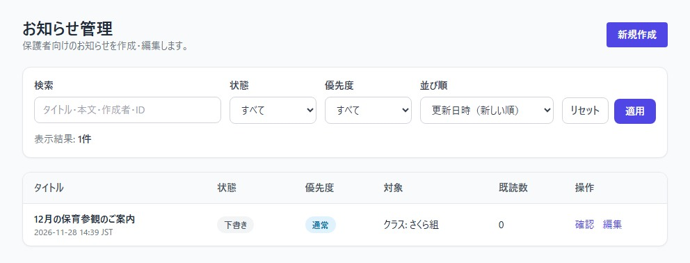

お知らせ・アンケート／作成・管理する職員向け
配信前に確認すること
お知らせとアンケートで、公開の手順や後から直せる項目が異なります。作り始める前と、公開する直前に確認してください。
まずこのガイドラインを確認し、目的に合う作成手順へ進みます。
画面はすべて架空の例です。画像を押すと拡大できます。
1伝えるだけか、回答を集めるかを決める
| 使う機能 | 向いている内容 | 公開するまで |
|---|---|---|
| お知らせ | 行事の案内、持ち物、写真・PDFなどを保護者へ伝える。 | 下書きを作成 → 配信対象を確認 → 承認申請 → 管理者が承認して公開。 |
| アンケート | 保護者・職員から、参加予定や意見などの回答を集める。 | 質問・対象・回答単位を確定 → 作成 → 公開中にして保存。お知らせと同じ承認申請はありません。 |
急ぎの連絡は、園で決めている連絡方法も確認してください。ここで説明する「公開」は、相手のスマートフォンに通知が届いたことや、相手が内容を理解したことを意味しません。
2誰に届けるか・何件の回答が必要かを確かめる
- クラスや園児を絞るときは、具体的な名前まで選びます。似た名前や、別のクラスを選んでいないか確かめます。
- アンケートは「世帯ごと」（家庭につき1回答）・「園児ごと」・「職員ごと」で回答数の意味が変わります。兄弟姉妹がいても家庭で1件にするのか、園児それぞれで回答してもらうのかを先に決めます。
- 本文や添付に、別の家庭・園児の情報が含まれていないか見直します。結果を閲覧する職員も、必要な範囲を確認します。
お知らせの対象選びに注意
現行版では「クラス」を選んでも具体的なクラスが未選択のままだと、全保護者向けの下書きとして保存される場合があります。保存後の一覧で「配信対象」を確認し、違っていたら下書きを直してから承認申請してください。
現行版では「クラス」を選んでも具体的なクラスが未選択のままだと、全保護者向けの下書きとして保存される場合があります。保存後の一覧で「配信対象」を確認し、違っていたら下書きを直してから承認申請してください。

3公開する時刻と、保存するボタンを確認する
| 操作 | その時点で起きること |
|---|---|
| お知らせの「下書きを作成」「下書きを保存」 | 下書きを保存します。これだけでは保護者へ公開されません。 |
| お知らせの「承認申請する」 | 承認待ちになります。管理者の「承認して公開」で公開が承認されます。公開開始が未来なら、その時刻まで表示されません。 |
| アンケートの「作成する」「更新する」 | 選んだ状態を保存します。「公開中」で期間内なら、対象者が回答できるようになります。別の承認ボタンはありません。 |
| アンケートの「閲覧者を保存」 | 結果を閲覧できる職員だけを保存します。下のアンケート内容の更新とは別の操作です。 |
日時は画面の「JST」（日本時間）で確認します。開始・終了が空欄なら、その側の時刻制限はありません。アンケートは、まず「下書き」で作成し、確認後に「公開中」へ変える進め方をおすすめします。
4作成後に変更できる範囲を知っておく
| 対象 | 変更するときの扱い |
|---|---|
| お知らせの本文・対象・添付 | 下書きで編集します。承認待ちは申請取消、公開後は管理者の公開停止を経て下書きに戻し、変更後に再申請します。 |
| アンケートの対象者・回答単位・配信対象 | 作成後は変更できません。間違えた場合は正しい内容で別のアンケートを作成し、誤ったものを公開しないようにします。 |
| アンケートの質問・選択肢・必須設定・回答形式 | 作成する前に確定します。現行版は編集画面に欄があっても、その変更は保存されません。修正が必要なら別のアンケートを作ります。 |
| アンケートの開始日時 | 回答が入る前は変更できます。回答後は入力しても変更されません。終了日時・状態は変更できます。 |
下書きで作ったアンケートでも、質問や配信対象を後から自由に直せるわけではありません。作成前の見直しを済ませてください。
5公開前の最終確認を行う
チェックはこのページを読むためのものです。記録として保存されず、業務画面の設定も変えません。